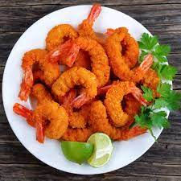

I'm from India,I completed my Undergrad in 2021 from BIHER, I worked as a project engineer at Wipro, where i was given a chance to work on migration of Java web application to cloud apps.
Prawns fry or India shrimp fry is a simple yet flavorful Indian seafood side dish made with Indian spices and herbs Prawns stir fry is not only easy to make but also has a lot of health benefits. They are rich in omega 3 fatty acids, less in calories, and tastes absolutely delicious when made right. And this recipe is one of our family favorites and typically vanishes immediately once it is served on the table
